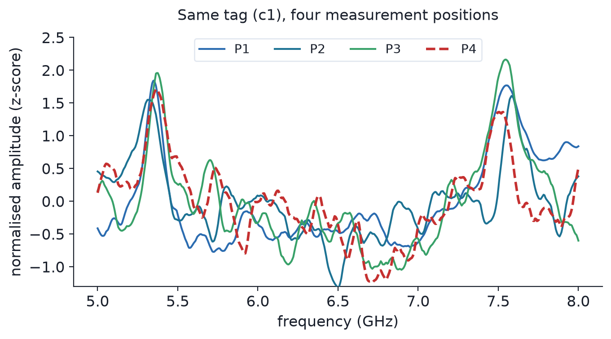

01 / Flagship research · Tyndall
CRFID domain generalisation
Can a chipless RFID classifier recognise the same tag under an unseen reader geometry?
I re-examined the evaluation protocol and rebuilt testing around physical-condition groups, separating familiar-condition recognition from transfer to an unseen joint reader geometry.
Transfer remained near chance. Signal, representation and readout diagnostics established what the tested methods could—and could not—generalise.
{kind=link}

Methods, findings & scope
Experimental design
The existing campaign contains 12,600 spectra in 252 physical-condition blocks. I examined whether repeated sweeps or shared physical conditions could cross split boundaries and inflate apparent generalisation. In the grouped protocol, repeated sweeps stay together; a familiar-condition score does not establish unseen-geometry transfer. P1–P3 supply development data; P4 holds out the joint 150 mm / 45° geometry. Familiar-condition evaluation and target-labelled diagnostics answer separate questions.
Technical work
Signal preprocessing, a first-difference 1-D CNN, matched ERM/IRM/DANN experiments, source-selection analysis, linear probes and block/seed uncertainty estimates. GroupDRO supplies a further matched comparison. Domain-aware Mixup stopped at its pairing-feasibility gate before training; it has no performance score.
What the evidence supports
C1 achieved 15.66% accuracy (0.1566) and 0.1122 Macro-F1 at P4 across five seeds, against a 14.29% uniform-chance reference for seven classes. Tested source-only interventions did not establish reliable improvement over their matched controls. Probe results support a representation-transfer limitation, with seed uncertainty; they do not prove all tag information was lost.
Supporting work included external-dataset checks and an OpenEMS redesign study. The simulated improvement remained below its practical gate; no fabricated RF redesign or hardware classification improvement is claimed.
Scope: one acquisition campaign. My contribution is the ML pipeline, experimental evaluation and diagnostics on existing measurements. The figure’s GHz axis is nominal because exact sample-by-sample frequency coordinates are unavailable.
{kind=link}
{kind=link}
{kind=link}